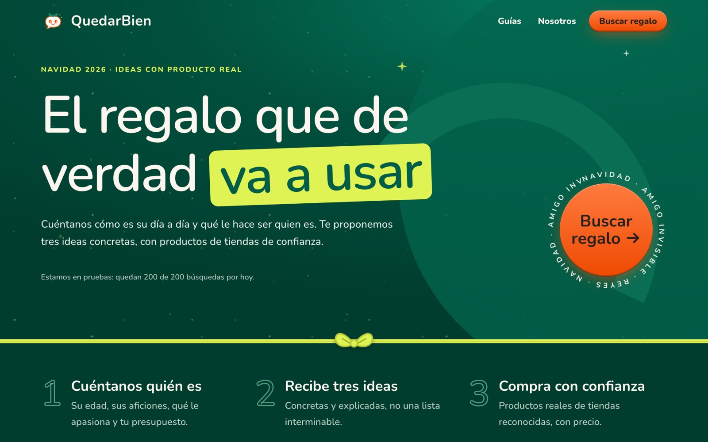

QuedarBien
Most gifts end up in a drawer. Research on gift-giving says recipients value how much they use a gift, not the moment they open it. So QuedarBien asks what someone does on a normal day and what you always see them with, then finds the premium version of something they already use, at a price they'd never pay for themselves.
- The engine: LLM steps work out the objects a person uses every day and what a real upgrade looks like, hybrid search finds candidates in a 220,000-product affiliate catalogue, and one batched scoring call ranks them on use, upgrade and how known the brand is.
- Evaluated, not vibed: 20 realistic personas, answered the way real shoppers fill in forms (with plenty of "don't know"), scored by LLM judges each time the engine changes.
- Run as a product: per-visitor and daily cost caps so a search costs about four cents, cookieless ad attribution, and Meta ad tests to find the hook that works.